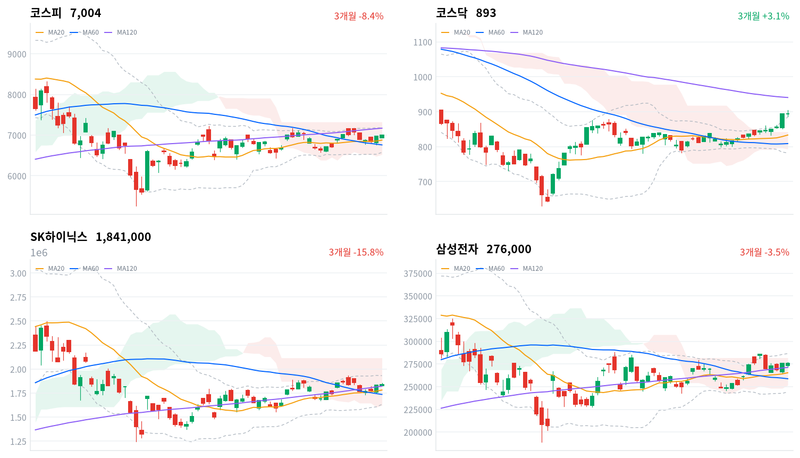

연휴 전 마지막 거래일에 코스피가 5거래일 만에 7,000선을 되찾았다. 지수를 올린 것은 정유와 방산이었고, 반도체 대형주는 움직이지 않았다.
국고채 금리는 7bp 넘게 내렸지만 신용 금리차는 오히려 넓어져, 우리는 오늘을 위험선호 복귀가 아닌 업종 교체로 본다.
코스피는 0.46% 오른 7,004로 마감해 5거래일 만에 7,000선을 되찾았고, 코스닥은 0.11% 내린 893에서 끝났다. 코스피는 6,938에서 하락 출발했으나 곧 그 수준을 넘어섰고, 하루 대부분을 그 선 아래에서 보내다 장 마감 무렵에야 그 선을 넘어섰다. 상승을 끈 것은 반도체가 아니라 정유와 방산이었다(SK이노베이션 +10.32%, S-Oil +11.69%, 한화에어로스페이스 +3.68%). 반도체 대형주는 제자리였다(SK하이닉스 +0.44%, 삼성전자 0.00%). 서울경제는 중국 주요 정유사가 10월부터 석유제품 수출을 멈췄다고 보도했다. 외국인 코스피 순매도는 1,193억원으로 연휴 뒤 다섯 세션 가운데 가장 작았다(전일 5,558억원, 당일 잠정).
채권시장은 금리를 낮췄지만 신용 경계는 풀지 않았다. 국고채 3년물이 7.3bp, 10년물이 7.1bp 내린 날에도 회사채 AA- 3년물과 국고채 3년물의 금리차는 70.1bp로 1.0bp 넓어졌다. 최근 2년(534거래일) 가운데 이보다 넓었던 날이 13일뿐이다. 금리 하락이 위험선호의 회복이었다면 신용 금리차도 함께 좁혀졌어야 한다. 주식시장도 같은 쪽으로 값을 매겼다. 지수 상승은 유가와 중동 긴장의 수혜 업종에 몰렸고, 금리 하락의 덕을 가장 크게 볼 반도체는 움직이지 않았다. 우리는 오늘의 지수 회복을 위험선호 복귀가 아닌 업종 교체로 본다.
이 판단의 무게중심은 정유주다. 석유와가스 업종은 4.16% 올라 업종 1위였고 19종목 가운데 17종목이 함께 올랐다. 우리는 중국의 석유제품 수출 중단이 아시아 역내 공급을 줄여 정제마진을 끌어올린다는 재료가 주동인이라고 판단한다. 하루 두 자릿수 상승은 원유 가격 변화만으로 설명하기에 크고, 보도가 꼽은 직접 재료도 휘발유·항공유 수출 중단이다. 원유가 오른 만큼 재고평가이익을 따라간 원유 베타에 연휴 전 수급이 겹쳐 폭이 과장됐을 수도 있으나, 업종 거의 전부가 함께 오른 넓이를 보고 정제마진 쪽에 무게를 둔다. 두 설명은 직전 미국 세션에서 WTI가 내린 날 갈린다. 그날 석유와가스 업종이 코스피를 웃돌면 정제마진, 2%포인트 넘게 밑돌면 원유 베타다.
오늘 상승에는 작은 무게만 둔다. 연휴 전 마지막 거래일에 기관 막판 매수로 소폭 오른 하루이고, 상승을 이끈 재료도 반도체 이익이 아닌 유가와 지정학이었다. 정유주는 원유 변동성과 사흘 휴장의 갭 위험이 크고, 이번 급등이 정제마진 재료인지 원유 가격을 따라간 것인지는 아직 가려지지 않았다. 다음 방향은 10월 2일 밤 9시 30분(한국시간)에 나오는 미국 9월 고용보고서 뒤의 미국 10년물이 정하고, 10월 6일 첫 세션의 외국인 순매도 규모가 그것을 확인한다. 중국 당국은 10월 7일 이후 석유제품 수출 재개를 검토하고, 삼성전자 3분기 잠정실적은 10월 8일로 보도됐다.
코스피가 20일 이동평균(6,877) 아래에서 마감하면 지수가 이 자리를 지킨다는 판단을 거둔다. 오늘 종가 바로 아래의 전환선(6,968)을 지나 만나는 다음 지지선이고, 볼린저밴드 중심선과 같은 자리다. 고용보고서를 한꺼번에 받는 10월 6일에 이 선을 내주면 오늘의 회복을 연휴 전 수급이 만든 착시로 보고 판단을 다시 쓴다.
10월 1일 판단은 유효하다. 코스피 종가는 그날 정한 무효화 선인 6,855를 넉넉히 지켰다. 기다린 조건은 일부만 왔다. 외국인 순매도는 기준으로 잡은 1조원보다 훨씬 작았지만, 반도체와반도체장비 업종은 0.18% 올라 코스피를 밑돌았다. 고용보고서는 오늘 밤에 나온다. 어제 그 결과를 받을 세션으로 적은 10월 5일은 개천절 대체공휴일 휴장이라, 첫 세션은 10월 6일이다. 어제 놓친 것은 이 휴장 일정이다. 판단은 그대로 두고 두 가지를 고친다. 무효화 선을 오늘의 20일선으로 올리고, 정유주가 정제마진 재료인지 원유 베타인지를 새 질문으로 더한다. 금리가 내린 날 반도체가 지수를 밑돈 점은, 반도체 가격이 금리보다 이익과 수급 일정에 묶여 있다는 어제 해석과 어긋나지 않는다.
전일 미국 증시는 10월 1일(현지) 소폭 올랐다(S&P500 +0.19%, 나스닥 +0.04%, 다우 +0.04%). 오늘 아시아는 약했다(항셍 -2.60%, 닛케이 -0.94%, 대만가권 +0.25%). 상해종합(+0.31%)은 국경절 휴장으로 9월 30일 종가다. 네 지수는 평균 0.74% 내렸고, 코스피는 이보다 1.21%포인트 앞섰다.
시가는 6,938로 전일 종가 6,971보다 낮게 열렸다. 매일경제는 미국 장기금리와 국제유가에 대한 경계가 장 초반을 눌렀다고 전했다. 한국 정규장 동안 미국 선물은 소폭 올랐다(S&P500 선물 +0.16%, 나스닥100 선물 +0.11%). 밖의 바람은 약했고, 반등은 안에서 나왔다.
코스피는 하루 고가(7,011) 바로 아래에서 마감했다. 코스닥은 오전에 오른 폭을 내주고 하루 범위의 가운데에서 끝났다. 원/달러 환율은 장 초반 1,366원이 고점이었고 마감 무렵 1,349원까지 내려 1,351원으로 끝났다. 뉴스1은 외국인 주식 매도에도 9월 사상 최대 무역흑자에 따른 수출업체 달러 매도가 환율을 끌어내렸다고 전했다.
유가와 지정학이 업종을 고른 날이다. 서울경제에 따르면 중국 국영 페트로차이나 등이 10월부터 석유제품 수출을 멈췄고, 아시아경제는 트럼프 대통령이 중간선거 뒤 이란 폭격 강화 가능성을 언급했다고 보도했다. 정유와 방산이 오르고 반도체가 쉬는 동안 지수를 끝내 전일보다 높게 마감시킨 것은 장 막판 기관 매수였다고 머니투데이는 전했다. 시간외 거래와 장중 투자자별 흐름은 받을 수 있는 자료가 없어, 막판 매수가 어느 업종으로 갔는지는 10월 6일 수급에서 다시 본다.
코스피는 이번 주를 7,000선 위에서 마쳤지만 한 주 전보다는 낮다. 9월 23일 종가 7,081에서 연휴 뒤 사흘 내리 밀려 9월 30일 6,838까지 내려갔고, 이틀 만에 되돌아왔다. 20일선과 60일선 위로는 올라섰지만 120일선(7,170)과 최근 20거래일 고점(7,172)이 바로 위에 겹쳐 있다. 코스닥은 같은 한 주에 5.78% 올라 코스피(-1.09%)를 크게 앞섰고, 한국경제는 코스닥이 오늘 장중 7월 이후 처음 900선을 넘었다고 전했다.
| 지수 | 종가 | 등락률 | 시가 | 고가 | 저가 | 전일 종가 |
|---|---|---|---|---|---|---|
| 코스피 | 7,003.74 | +0.46% | 6,938.27 | 7,011.04 | 6,927.88 | 6,971.35 |
| 코스닥 | 893.29 | -0.11% | 893.22 | 903.88 | 885.65 | 894.29 |
코스피는 시가 근처에서 저가를 찍은 뒤 첫 한 시간 안에 전환선(6,968)을 되찾았고, 이후 7,000선 바로 아래에 다섯 시간 가까이 갇혀 있었다. 그 선을 넘은 것은 장 마감 직전이다. 저가에서의 반등은 정유·방산·2차전지가 받쳤다(S-Oil +11.69%, LIG디펜스앤에어로스페이스 +5.25%, LG에너지솔루션 +2.91%, 삼성SDI +2.32%). 반도체 대형주가 쉬는 동안 바이오와 건설·지주는 지수를 끌어내렸다(삼성바이오로직스 -4.61%, 두산 -3.11%, 현대건설 -2.39%).
코스닥은 시가 근처에서 출발해 오전에 하루 고가 904까지 올랐지만 지키지 못했다. 하루 저가는 886이었고 893에서 마감했다. 한 주 동안 반도체 소부장이 끌어올린 상승이 고점 앞에서 쉬었다.
오른 업종이 내린 업종보다 훨씬 많았는데도 코스피가 32포인트 오르는 데 그친 것은 시가총액이 가장 큰 반도체가 쉬었기 때문이다. 정유·방산·2차전지는 크게 올랐지만 지수 안의 비중이 반도체 두 종목에 한참 못 미친다. 지수가 이 자리를 지키려면 결국 반도체가 다시 움직여야 하고, 그 계기는 10월 8일 잠정실적 전후의 대형주 수급에서 나온다.

코스피·코스닥·SK하이닉스·삼성전자 3개월 일봉에 이동평균(20·60·120)·볼린저밴드·일목균형표 구름대를 겹쳐 그렸다. 상승 캔들은 녹색, 하락 캔들은 적색이다.
코스피는 20일선과 60일선 위, 120일선 아래에서 마감했고 일목 구름 안에 있다. 120일선(7,170)과 볼린저 상단(7,179)이 겹친 자리를 넘으면 구름 상단(7,324)까지 열리고, 전환선(6,968)을 내주면 20일선(6,877)이 다음 지지선이다.
코스닥은 볼린저 상단(884) 위, 일목 구름 위에서 마감했다. 오늘 고가이자 60거래일 고점인 904를 넘으면 120일선(941)이 다음 저항이고, 볼린저 상단 아래로 되돌아오면 전환선(863)이 다음 지지선이다.
SK하이닉스(184만원)는 20·60·120일선 위에 있지만 일목 구름 안에 머문다. 볼린저 상단(193만원)이 첫 저항이고 그 위로 20일 고점(194만원)이 있으며, 120일선(182만원)을 내주면 일목 기준선(175만원)이 다음 지지선이다.
삼성전자(27만6천원)는 120일선(27만1천원) 위, 일목 구름 안 위쪽에 있다. 구름 상단(28만2천원)을 넘으면 20일 고점(28만5,500원)이 다음 저항이고, 120일선을 내주면 20일선(26만5천원)이 다음 지지선이다.
위 레벨은 이동평균·볼린저밴드·일목균형표와 스윙 고저를 기계적으로 계산한 값이며 투자 권유가 아니다.
| 주체 | 순매수(억원) |
|---|---|
| 개인 | -17,423 |
| 외국인 | -1,193 |
| 기관 | +3,800 |
| 주체 | 순매수(억원) |
|---|---|
| 개인 | +816 |
| 외국인 | -1,738 |
| 기관 | +938 |
외국인 매도는 나흘째 줄었고 기관이 지수를 받쳤다. 외국인은 코스피에서 1,193억원을 순매도했다(전일 5,558억원 순매도, 당일 잠정). 연휴 뒤 첫날인 9월 28일 3조2,682억원에서 매일 줄어든 끝이고, 다섯 세션 합계는 9조1억원이다. 기관은 3,800억원을 사 이틀째 순매수했고(전일 3,239억원), 개인은 1조7,423억원을 팔았다(전일 1조4,102억원 순매도).
지수와 수급의 방향은 맞았다. 한국경제는 1~9월 외국인 순매도 대부분이 삼성전자·SK하이닉스 관련 종목에 몰렸고 최근에는 매도가 전 종목으로 퍼졌다고 전했다. 종목별 투자자 자료가 없어 오늘 매도가 줄어든 곳이 반도체 대형주인지는 가르지 못하고, 10월 6일 첫 세션에서 외국인이 고용보고서 결과를 어떻게 받는지가 다음 확인점이다.
코스닥에서는 외국인이 1,738억원을 팔아 하루 만에 순매도로 돌아섰고(전일 2,280억원 순매수), 기관 938억원과 개인 816억원이 받았다(당일 잠정). 오전 고점을 지키지 못한 오늘 장의 모양과 같은 방향이다.
장중 누적 수급과 프로그램 매매는 받을 수 있는 자료가 없어 싣지 않는다.
| 순위 | 종목/ETF | 구분 | 거래대금 | 비고 |
|---|---|---|---|---|
| 1 | SK하이닉스 | 개별주 | 3.64조원 | - |
| 2 | 삼성전자 | 개별주 | 3.10조원 | - |
| 3 | 반도체 테마 ETF | 테마·롱 | 2.28조원 | 28종 합산 |
| 4 | KODEX CD금리액티브(합성) | 단기금리·현금성 | 1.15조원 | - |
| 5 | 삼성전기 | 개별주 | 0.74조원 | - |
| 6 | 삼성전자우 | 개별주 | 0.49조원 | - |
| 7 | SK스퀘어 | 개별주 | 0.39조원 | - |
| 8 | 2차전지 테마 ETF | 테마·롱 | 0.29조원 | 14종 합산 |
| 9 | 두산 | 개별주 | 0.20조원 | - |
| 10 | SK하이닉스 레버리지 | 레버리지·롱 | 0.20조원 | 5종 합산 |
단위 백만원 원본을 조 단위로 환산했다. 같은 기초자산 ETF는 방향별로, 같은 테마 섹터 ETF는 테마별로 묶고 지수·해외 ETF는 제외했다.
가격이 쉬어도 거래는 반도체에 몰렸다. SK하이닉스와 삼성전자가 1·2위였고, 반도체 테마 ETF 28종 합산 2.28조원이 3위다. 방향 상품으로는 SK하이닉스 단일종목 레버리지 5종이 10위에 들었고, 상위 열 상품에 인버스는 없다. 거래대금은 매수와 매도를 함께 세므로, 이 쏠림은 반도체에 손이 많이 갔다는 뜻이지 돈이 들어왔다는 뜻은 아니다.
오늘 가장 크게 오른 정유주는 상위 10에 없다. SK이노베이션 거래대금은 1,763억원, S-Oil은 746억원으로 반도체 대형주와 견주면 작은 규모다. 큰 자금이 업종을 옮겼다기보다 적은 거래로 가격이 크게 움직인 날로 본다. 2차전지 테마 ETF 14종이 8위에 올라 WICS 2차전지 섹터 상승(+2.83%)과 같은 쪽이었다. KODEX CD금리액티브(합성)는 단기금리를 따르는 대기 자금 상품이라 방향성 거래와 결이 다르다.
WICS 12개 섹터 가운데 7개가 올랐다. 방산(+3.47%)과 2차전지(+2.83%)가 앞섰고 헬스케어(-1.58%)가 가장 약했다. 한 주로 넓히면 반도체(+5.97%)가 여전히 1위이고, 은행(-3.84%)과 건설(-3.66%)이 가장 약하다.
네이버 업종으로 보면 오른 업종이 넓었다. 석유와가스는 4.16% 올라 업종 1위였고 19종목 가운데 17종목이 올랐다. 통신장비(+3.91%)는 55종목 가운데 41종목, 우주항공과국방(+3.89%)은 35종목 가운데 30종목이 올랐다. 화학(+2.27%)도 122종목 가운데 77종목이 올라 일부 종목이 끈 상승이 아니다.
반도체와반도체장비는 0.18% 오르는 데 그쳤고 172종목 가운데 90종목만 올라 방향이 없었다. WICS 기준 반도체는 0.61% 내렸다. 두 분류는 구성과 비중이 달라 부호가 갈린다. 한 달 동안 시장을 끈 업종이 쉬는 사이 유가·지정학 수혜 업종과 2차전지로 손이 옮겨 간 하루다.
정유주가 두 자릿수로 뛰었다(SK이노베이션 +10.32%, S-Oil +11.69%). 이투데이와 뉴스핌은 중국 석유제품 수출 중단과 중동 긴장으로 유가가 오르며 정제마진과 재고평가이익 기대가 붙었다고 전했다. 서울경제는 이 조치로 아시아 경유 스와프 가격이 2주 만에 최고로 올랐다고 보도했다.
SK하이닉스는 0.44% 올라 지수 기여 상위에 들었지만 확인된 개별 재료는 없다.
삼성전자우는 1.71% 내렸다. 보통주는 보합이었고 확인된 재료는 없다.
삼성바이오로직스는 4.61% 내려 지수를 가장 크게 끌어내린 종목 가운데 하나였다. 재경일보는 유상증자 신주 발행가액 확정 공시의 여파라고 전했다. 같은 날 아시아경제는 노조가 10월 26일부터 3주간 2차 총파업을 예고했다고 보도했다.
에너지 장비주가 함께 올랐다(한화솔루션 +5.4%, HD현대에너지솔루션 +6.25%). 재경일보는 공시나 뉴스 없이 업황 기대만으로 올랐다고 전했고, 확인된 재료는 없다.
방산주도 강했다(한화시스템 +5.07%, LIG디펜스앤에어로스페이스 +5.25%). 머니투데이는 정유주와 방산주가 국제유가 상승과 중동 군사 긴장 고조에 강세를 보였다고 전했다. 거래대금 상위 종목 가운데 티엠씨(+29.95%)와 롯데에너지머티리얼즈(+18.28%)는 크게 올랐고 한국콜마(-6.76%)는 크게 내렸지만, 세 종목 모두 확인된 재료는 없다.
국고채 금리가 단기와 장기에서 같은 폭으로 내렸다. 3년물은 7.3bp 내린 3.937%, 10년물은 7.1bp 내린 4.365%가 됐다. 두 만기의 금리차는 42.8bp로 거의 그대로였고, 최근 2년(534거래일) 가운데 넓은 쪽 19% 안에 있다. 원/달러 환율은 1,351원으로 마감해 원화가 강해졌다.
| 지표 | 금리 | 전일比(bp) | 기준일 |
|---|---|---|---|
| 국고채 3년 | 3.937% | -7.3 | 2026-10-02 |
| 국고채 10년 | 4.365% | -7.1 | 2026-10-02 |
| CD 91일 | 3.21% | 0.0 | 2026-10-02 |
| 회사채 AA- 3년 | 4.638% | -6.3 | 2026-10-02 |
| 한국은행 기준금리 | 3.00% | 0.0(전월比) | 2026-09 |
기준금리는 9월 기준이다.
국고채는 미국 장기금리의 되돌림을 하루 늦게 받았다. 매일경제는 미국 10년물이 10월 1일(현지) 장중 2002년 이후 최고까지 올랐다고 전했지만, 종가는 전일보다 내렸다. 단기와 장기가 거의 같은 폭으로 내려 커브는 움직이지 않았고, 오늘 하락은 특정 구간보다 금리 수준 전체의 되돌림으로 본다. CD 91일물은 그대로였다.
국고채 3년물은 기준금리보다 93.7bp 높고, 최근 2년 가운데 넓은 쪽 17% 안이다. 이 격차에는 정책 경로 기대와 기간프리미엄이 섞여 있고, 오늘 3년물 하락만큼 좁혀졌다.
신용 쪽은 반대로 움직였다. 회사채 AA- 3년물은 6.3bp 내려 국고채보다 덜 내렸고, 국고채 3년물과의 금리차는 70.1bp로 넓어져, 비교 기간 가운데 가장 넓은 쪽에 붙어 있다. 국고채 강세가 회사채로 고르게 번지지 않은 날이다.
서울경제와 파이낸셜뉴스에 따르면 중국 국영 페트로차이나와 민간 저장석유화학 등 주요 정유사가 10월부터 홍콩·마카오를 뺀 지역으로의 석유제품 수출을 멈췄다. 페트로차이나는 9월 30일 10월 휘발유·항공유 선적 상당 부분을 취소했고, 당국은 국경절 연휴가 끝나는 10월 7일 이후 재개 여부를 검토한다. 아시아경제는 트럼프 대통령이 11월 중간선거 뒤 이란 폭격 강화 가능성을 언급했고, 미 국방부가 페르시아만 항모 추가 배치를 검토한다고 보도했다.
경로는 이익이다. 아시아 역내 석유제품 공급이 줄면 정제마진이 오르고, 국내 정유사의 4분기 이익 전망이 올라간다. 원유 가격 상승은 재고평가이익이라는 다른 경로로 같은 종목을 움직인다. 수혜 쪽인 석유와가스 업종은 오늘 가격도 그쪽이었고, 방산도 함께 올랐다. 원가 부담 쪽은 엇갈렸다. 대한항공은 1.92% 내렸지만, 같은 원가 경로에 있는 화학 업종은 오히려 올랐다. 10월 7일 이후 중국의 수출 재개 발표가 첫 분기점이다. 재개가 발표된 다음 세션에 정유주가 지수를 크게 밑돌면 정제마진 재료가 가격에서 빠졌다는 뜻이다.
파이낸셜뉴스와 뉴스1에 따르면 삼성전자와 SK하이닉스의 자사주 매입이 막바지에 이르렀다. 삼성전자 3분기 잠정실적은 10월 8일로 보도됐고(회사 공시 전), 중기이코노미는 같은 날 옵션 만기와 반도체 ETF 정기 리밸런싱이 겹친다고 전했다.
경로는 수급과 이익이다. 대형 반도체에 꾸준히 들어오던 자사주 매수가 끝나면 외국인 매도를 받아 줄 주체가 줄어든다. 잠정실적은 이익이 금리 부담을 이긴다는 해석을 직접 시험한다. 수급 공백의 위험은 반도체 대형주에, ETF 리밸런싱의 변수는 소부장에 걸린다. 오늘 두 대형주는 제자리였고 반도체 거래대금은 여전히 컸다. 10월 6~8일 세 세션의 외국인 코스피 순매도 규모와 10월 8일 잠정실적이 분기점이다.
국내 정책 당국의 새 발표는 오늘 확인되지 않았고, 상법·밸류업 관련 계류 정책에도 변화가 없다. 한국은행 기준금리는 3.00%다. 국내 증시는 개천절 대체공휴일까지 사흘 쉬고 10월 6일에 다시 열리며, 10월 9일 한글날에도 쉰다. 미국 노동통계국 일정상 9월 고용보고서는 10월 2일 밤 9시 30분(한국시간)에 나온다. 10월 6일 첫 세션은 그 결과와 10월 5일 미국 세션을 한꺼번에 반영한다.
7000 탈환한 코스피, 美 고용지표·삼전실적 변수머니투데이 · 10월 2일
코스피가 5거래일 만에 7000선을 탈환하며 2일 상승 마감했다. 기관의 순매수에 힘입어 하락 출발 후 반등했으며, 미국 9월 고용보고서와 8일 예정된 삼성전자 잠정실적이 주요 변수로 꼽힌다. 증권가는 고금리 부담이 지속되는 가운데 실적 가시성이 높은 업종 중심의 차별화 장세가 이어질 것으로 전망했다. 이날 정유주와 방산업종이 국제유가 상승과 중동 군사 긴장 고조에 따라 강세를 보였으며, SK이노베이션과 S-Oil은 각각 10% 이상 뛰었다. 코스닥은 소폭 내렸으나 주간 수익률은 코스피를 상회했다. 삼성전자 3분기 실적 발표를 앞두고 증권가는 시장이 이익 사이클 훼손 가능성보다는 실적 개선을 기대하고 있는 것으로 분석했다.
대외 악재에도 환율 1350원까지 하락… '역대급' 무역흑자 '달러 공급'(종합)뉴스1 · 10월 2일
미국 고금리와 국제유가 급등 등 대외 악재에도 달러·원 환율이 1350원까지 하락했다. 9월 무역수지 흑자가 사상 최대인 499억 달러를 기록하면서 수출업체의 달러 매도 물량이 지속적으로 공급되고 있기 때문이다. 같은 기간 수출은 전년 동월 대비 83.5% 증가한 반면 수입은 26.0% 증가에 그쳐 무역 불균형이 확대됐다. 외국인이 국내 주식을 매도하는 과정에서 달러 수요가 증가했지만, 반도체 수출 호조로 인한 구조적인 달러 공급 증가가 이를 상쇄했다. 국제 투자은행 씨티는 메모리 반도체 호황이 지속될 경우 2026~2028년 한국의 경상수지 흑자가 국내총생산 대비 22.2%에 달할 것으로 예측하며, 이에 따라 장기 환율 전망을 1400원에서 1250원으로 하향 조정했다.
금리·유가 부담 버텨낸 코스피…5거래일 만에 ‘7천피’ 회복매일경제 · 10월 2일
코스피 지수가 2일 5거래일 만에 '7천피'를 회복했다. 미국 장기 국채금리와 국제유가 상승에 대한 경계 속에서도 강보합을 유지한 것으로, 코스피는 장 초반 0.47% 내린 6938.27에서 출발했으나 장 막판 상승 전환했다. 업종별로는 화학·금속·제조 등이 강세를 보인 반면 제약·건설·증권이 약했다. 시총 상위 종목 중 LG에너지솔루션·삼성생명 등이 오른 반면 삼성바이오로직스는 내렸다. 전문가는 신규 모멘텀 부재로 관망세가 지속할 것으로 전망하면서, 미국 9월 고용보고서와 삼성전자 잠정실적 발표 전까지 금리 변동성이 시장 방향을 좌우할 가능성이 높다고 지적했다.
미 정부 지분투자 시사한 트럼프…앤스로픽, 이달 14일 첫 투자자설명회한국경제TV · 10월 2일
트럼프 대통령이 오픈AI, 앤스로픽 등 프런티어 AI 기업의 지분을 미 정부가 확보할 수 있다는 입장을 밝혔다. 앤스로픽과 미 국방부 간 계약 분쟁으로 악화했던 관계도 호전되는 중이다. 앤스로픽은 10월 14일 기관투자가 대상 투자자설명회를 개최한 뒤 11월 중 기업공개를 목표로 하고 있다. 투자자들이 평가한 기업가치는 1조8000억~2조 달러 규모로, 지난해 매출 46억 달러, 영업손실 80억 달러를 기록했다. 국내 증권사는 개인투자자의 직접 청약이 제한적이지만, 상장 이후 밸류체인 수혜주 투자가 현실적 대안이라고 제시했다. 삼성전자와 SK하이닉스는 앤스로픽의 시리즈H 투자에 참여했고 공급계약을 체결해 상장과 직결되어 있다.
"1조 밸류업 어디로" 디오 주주행동 본격화..지분 9% 결집 [fn마켓워치]파이낸셜뉴스 · 10월 2일
코스닥 상장사 디오의 소액주주들이 지분 9%를 결집해 주주행동을 본격화했다. 에이치프라이빗에쿼티(에이치PE)가 2024년 700억원 투자 당시 제시한 '3년 내 기업가치 1조원 달성'과 주주환원 계획의 이행을 요구하는 것이다. 디오의 올해 상반기 연결 매출은 863억원으로 전년 동기 대비 13.7% 증가했고 영업이익은 88.3% 늘어 실적 정상화 흐름을 보이고 있으나, 주가는 최근 1년간 약 47% 하락해 실적과 주가 간 괴리가 발생했다. 주주연대는 자사주 매입·소각과 배당 확대를 포함한 구체적인 주주환원책과 2027년까지의 기업가치 제고 로드맵을 요구했으며, 회사 측 답변이 불충분할 경우 임시주주총회 소집을 검토 중이다. 이는 PE의 상장사 밸류업 전략이 실적 개선을 넘어 자본배분 단계에서 평가받는 사례로 지목된다.
트럼프 "중간선거 뒤 이란 폭격 강화 가능"…美, 항모 추가 배치 검토(종합)아시아경제 · 10월 2일
도널드 트럼프 미국 대통령이 11월 중간선거 이후 이란에 대한 폭격을 강화할 가능성을 시사했다. 트럼프 대통령은 타임 인터뷰에서 선거 후 이란 폭격 강도를 높일 수 있냐는 질문에 "가능하다"고 답했으며, 유엔 총회에서 이란을 "전멸시킬 수도 있다"고 한 발언도 재확인했다. 미 국방부는 페르시아만에 항공모함 1척과 해군·해병대 병력 약 1만 명을 추가 배치하는 방안을 검토 중이고, 시어도어 루스벨트함은 이미 샌디에이고를 떠났다. 경제 제재도 병행되고 있는데, 미 재무부는 이란의 양대 자동차 제조사와 철도공사, 인도네시아·아랍에미리트·튀르키예·홍콩 등의 부품 공급업체를 제재 대상으로 지정했다. 미국이 이란과의 협상에서 진전이 없자 군사적 위협과 경제 제재를 동시에 강화하고 있는 상황이다.
HBM·낸드·CPU로…AI ETF 쪼개 담는다서울경제 · 10월 2일
AI 투자 수요가 지속되면서 국내외 운용사들이 ETF 시장에서 세분화된 상품 전쟁을 벌이고 있다. KB자산운용과 한화자산운용은 지난달 낸드메모리·HBM·반도체 소부장 관련 ETF를 연이어 출시했고, 마이크론과 샌디스크 같은 글로벌 저장장치 기업에 집중하는 상품도 나왔다. D램과 미국 CPU 기업 중심 상품들도 상장을 앞두고 있다. AI 산업이 소프트웨어에서 로봇·자동차 등 현실 세계로 확대되자 피지컬 AI·에이전틱 AI 테마 ETF도 등장했다. 미국에서는 MLCC·PCB·액추에이터·파운드리 같은 세부 부품과 공정까지 투자 대상으로 하는 상품들이 나타나고 있다. 업계는 투자자들의 관심이 성장 가능성 높은 분야에 집중되면서 운용사들이 더욱 정교한 상품 설계를 추진하는 추세라고 분석했다.
"7천피서 꼼짝 못하네"…증시 발목 잡힌 이유 있었다한국경제 · 10월 2일
외국인 투자자의 한국 증시 이탈이 심화되고 있다. 2026년 1월부터 9월까지 외국인은 유가증권시장에서 190조5000억원어치를 순매도했으며, 이 중 삼성전자와 SK하이닉스 관련 4개 종목이 178조원(93.4%)을 차지했다. 최근에는 반도체 대형주 매도를 넘어 유가증권시장 전 종목으로 순매도가 확산되어 지난달 73.1%의 상장 종목이 순매도 대상이 됐다. 증권가는 코스피지수가 박스권에 갇혀 있으면서 미국 국채 금리 상승과 국제 유가 불안이 겹친 점을 이탈의 주요 원인으로 분석한다. 외국인의 순매도는 매도를 늘린 것보다 매수를 대폭 줄인 결과로, 지난달 매수액이 전월의 절반 이하로 감소했다. 전문가들은 외국인의 국내 증시 복귀를 위해 주가가 더 내려 밸류에이션 매력이 명확해지거나 기업 이익이 개선돼야 한다고 지적한다.
반도체 소부장의 힘…코스닥, 다시 900 넘본다한국경제 · 10월 2일
코스닥지수가 10월 2일 장중 903.81까지 올라 7월 이후 처음 900을 넘었으나 893.29로 마감했다. 지난달 15일부터 단 하루를 제외하고 매일 상승세를 보였으며, 상승률은 10%로 같은 기간 코스피(5.7%)의 두 배에 가깝다. 이는 글로벌 AI 설비투자 확대에 따라 반도체 소재·부품·장비와 광통신, 전력 인프라 등이 동반 강세를 보인 결과다. 지난해 말 코스닥 시총 상위 10곳 중 바이오 기업 7곳이 주도하던 시장 구도가 반도체 6곳으로 바뀌었고, 반도체 시총 비중은 18.1%에서 42%로 높아졌다. 주성엔지니어링은 시총이 9배 급증해 63위에서 4위로 올랐다. 다만 외국인이 7월 이후 3조원어치를 순매도하며 변수로 작용하고 있다.
비반도체 ‘이익 눈높이’ 높아져…석달새 15% 껑충서울경제 · 10월 2일
반도체를 제외한 코스피200 기업들의 2027년 영업이익 전망치가 최근 3개월간 311조 원에서 358조 원으로 15.1% 상향되면서, 같은 기간 삼성전자와 SK하이닉스의 상향률(5.5%)을 3배 이상 앞섰다. SK이노베이션(56.4%), S-Oil(42.0%), HMM(35.8%) 등 에너지·해운 기업을 중심으로 실적 전망이 가파르게 높아졌다. 에너지 업종의 실적 개선과 경기회복 기대, 그리고 원화 강세 속에서도 환율 효과를 넘어선 수익성 개선이 나타나고 있다는 점이 주목된다. 반도체 대형주 중심의 실적 모멘텀에서 벗어나 비반도체 전반으로 실적 개선이 확산하고 있으며, 9월 반도체 제외 업종의 수출액도 전년 동월 대비 23.1% 증가해 4분기 성장세가 이어질 가능성을 시사한다.
13년 만에 다시 하나로…동아쏘시오홀딩스, 동아제약 흡수합병 완료이데일리 · 10월 2일
동아쏘시오홀딩스가 10월 1일 100% 자회사인 동아제약을 흡수합병하고 사명을 동아제약으로 변경했다. 2013년 지주회사 체제 전환 당시 분리됐던 지주사와 사업회사가 13년 만에 다시 한 법인으로 통합된 것이다. 합병은 동아쏘시오홀딩스가 동아제약 발행주식 100%를 보유한 상황에서 무증자 합병으로 진행되어 신주 발행이나 주주 지분 변동이 없었으며, 주주 103명이 총 6166주(전체 0.09%)에 대해 반대 의사를 표시했다. 합병으로 회사 자산은 6월 말 기준 9850억원에서 1조4115억원으로 43% 증가했으며, 자본총계는 9480억원, 부채총계는 4635억원이다. 동아쏘시오그룹은 순수 지주회사에서 사업형 지주사로 전환하면서 의사결정 신속성과 경영 효율성 향상, 영업현금흐름 개선을 기대하고 있다.
엔비디아 320조·SK하닉 40조·삼성전자 15조, '자사주 매입 이후 성적표'이코노미스트 · 10월 2일
SK하이닉스는 8월 19일 40조원 자사주 매입과 전량 소각 계획을 발표한 후 약 23% 상승률을 기록했으며, 발행주식총수의 3.3%에 달하는 소각으로 밸류에이션 재평가가 이뤄지고 있다. 엔비디아는 1500억달러의 자사주 매입 추가 승인으로 기존 승인분을 포함해 총 320조원 규모의 역대 최대 자사주 매입을 단행했으며, 4개월 전 발표 이후 4.6% 상승했다. 반면 삼성전자는 15조원 규모 자사주 매입 발표 후 오히려 2.3% 하락했는데, 임직원 보상재원 포함으로 단기 매물이 쏟아졌기 때문이다. 세 기업 모두 저평가 상황에서 자사주 매입을 단행하고 있으며, 현금 창출력을 바탕으로 주주환원을 확대하는 추세다.
9월 日 도쿄권 CPI 2.7%↑ …"8개월 만에 2.0% 상회"뉴시스 · 10월 2일
2026년 9월 일본 도쿄 수도권의 소비자 물가지수(CPI)가 전년 동월 대비 2.7% 상승했다. 총무성이 발표한 도쿄도 CPI는 102.6을 기록했으며, 변동이 심한 신선식품을 제외한 수치로 전월의 1.8% 상승에서 크게 확대되어 8개월 만에 일본은행의 물가안정 목표인 2.0%를 넘어섰다. 시장 예상치인 2.4%를 0.3%포인트 초과했다. 수도요금 기본료 무상화 종료와 첫째 자녀 보육료 무상화에 따른 물가 하락 효과 소멸 등 제도적 요인과 실버위크 휴일 배치 개선으로 숙박료가 4.6% 상승한 점이 물가 상승을 이끌었다. 서비스 가격도 2.3% 올라 2025년 8월 이후 가장 높은 오름폭을 보였다. 신선식품을 포함한 지수는 2.7% 올라 2025년 11월 이래 최대 상승률을 기록했다.
트럼프는 늘려달라는데…中, 석유제품 수출 중단서울경제 · 10월 2일
중국의 국영 정유사 페트로차이나와 민간 정유사 저장석유화학이 10월부터 미국을 포함한 각국으로의 석유제품 수출을 중단했다. 페트로차이나는 지난달 30일 10월 예정 휘발유와 항공유 선적의 상당 부분을 취소했고, 당국도 국경절 연휴가 끝나는 7일 이후에나 수출 재개 여부를 검토할 계획이다. 중국은 표면적으로 원유 조달 불확실성으로 인한 자국 공급 안정을 이유로 들고 있으나, 지난달 말 미중 정상회담에서 미국이 석유제품 수출 확대를 요청했던 점을 고려하면 중간선거를 앞두고 고유가 부담이 커진 트럼프 대통령을 압박하려는 의도로 보인다. 이 조치로 아시아 경유 스와프 가격이 2주 만에 최고 수준에 도달했으며, 일부 국가의 연료 가격이 사상 최고치에 이를 가능성이 있다.
5.5% 위협하는 美국채…英·佛까지 고금리 쇼크매일경제 · 10월 2일
글로벌 국채 시장의 매도세로 미국, 영국, 프랑스의 장기 국채 금리가 수십 년 만의 고점을 기록했다. 미국 10년물 국채 금리는 1일 장중 5.34%까지 올라 2002년 이후 최고치를 나타냈으며, 3분기 동안 약 0.9%포인트 상승해 1994년 이후 최대 분기 상승폭을 보였다. 영국 30년물 국채는 6.029%까지 오르며 1998년 1월 이후 최고, 10년물도 5.51%로 2007년 이후 최고 수준이고, 프랑스 10년물도 5%에 다가섰다. 금리 급등의 배경에는 중동발 에너지 가격 상승으로 인한 물가 불안이 있으며, 미국 8월 PCE 물가지수가 전년 동월 대비 3.4% 올라 연준 목표치 2%를 넘었다. 재정적자가 커진 정부와 AI 투자가 필요한 기업이 함께 장기 자금을 조달하면서 채권 수급 부담도 커졌다.
이란 전쟁에 美 석유기업 돈벼락…이익 4배 급증이데일리 · 10월 2일
이란 전쟁과 우크라이나의 러시아 에너지 시설 공격으로 글로벌 연료 공급이 차질을 빚으면서 미국 정유업체들의 수익성이 급증했다. 미국 증시 상장 8개 정유사는 이란 전쟁 발발 이후 2개 분기 동안 총 324억달러의 순이익을 올릴 것으로 예상되는데, 이는 지난해 같은 기간 68억달러의 4.8배 수준이다. 경유와 휘발유 가격이 원유 가격보다 더 큰 폭으로 급등하면서 정제 마진이 급증한 것이 주요 요인이다. 미국 정유시설은 지난 8월 하루 1740만배럴을 생산해 5년 만에 최고치를 기록했으며, 설비 가동률은 15주 연속 95%를 상회하며 1998년 이후 최고 수준을 유지 중이다. 정유기업의 초과이익 확대로 워싱턴에서는 민주당의 횡재이익세 도입 요구와 공화당의 경유 수출 금지 검토 등 정부 개입 목소리가 커지고 있다.
9월 28일 보고서는 연휴 뒤 반도체 급락이 휴장 중 미국 장기금리 상승의 이월인지를 물었고, 확인 기간은 오늘 장 마감까지였다. 미국 10년물이 9월 25일 수준 아래로 내려온 날은 기간 안에 한 번도 없었다. 오늘은 미국 10년물과 국고채 10년물이 함께 내린 기간 안의 유일한 세션이었는데, 반도체와반도체장비 업종은 코스피를 0.28%포인트 밑돌았다. 외국인이 반도체를 팔았는지는 업종별 투자자 자료가 없어 확인하지 못했다. 그래서 방향은 가리지 못한 채 이 질문을 닫는다.
메커니즘은 약해졌다. 금리가 오른 10월 1일에는 반도체가 지수를 웃돌았고, 금리가 내린 오늘은 밑돌았다. 반도체의 상대 성과가 금리와 같은 방향으로 움직였으니, 9월 28일 급락을 금리 이월로 보는 설명보다 이익 재료와 대형주 수급 일정 쪽 설명이 남는다. 이 물음은 10월 1일에 세운 이익 대 할인율 질문이 이어받는다.
10월 1일 보고서의 질문은 아직 열려 있다. 미국 10년물이 하루 5bp 이상 오른 다음 세션에서 반도체가 코스피를 웃돌고 외국인 순매도가 1조원 미만이면 이익 우위로 본다는 조건이었다. 오늘은 확인 기간의 첫 세션이었지만 직전 미국 세션에서 10년물이 내려 시험 조건이 생기지 않았다. 남은 세션은 10월 6일부터 8일까지 사흘이고, 고용보고서가 첫 세션의 조건을 정한다. 기간 마지막 날에는 삼성전자 잠정실적이 겹쳐, 그날은 이익 재료가 겹친 날로 따로 본다.
오늘 새 질문을 세운다. 정유주 급등이 중국 석유제품 수출 중단에 따른 정제마진 재료인지, 원유 가격을 따라간 원유 베타에 연휴 전 수급이 겹친 것인지다. 석유와가스 업종은 코스피를 3.70%포인트 웃돌았다. 정제마진이나 정유사 이익 전망이 가격에 얼마나 반영됐는지 보여 줄 시장 지표는 확보하지 못했고, 언론은 두 경로를 섞어 서술한다. 확인 기간은 10월 6일 개장부터 10월 13일 장 마감까지다. 직전 미국 세션에서 WTI가 내린 다음 국내 세션에 석유와가스 업종이 코스피를 웃돌면 정제마진 해석이 지지되고, 2%포인트 넘게 밑돌면 원유 베타 쪽이다. 중국이 수출 재개를 발표한 다음 세션의 같은 비교는 정제마진 경로를 직접 시험한다. 그런 날이 기간 안에 없으면 결론 없이 닫는다.
입력은 10월 2일 네이버 업종 등락률(석유와가스 +4.16%, 반도체와반도체장비 +0.18%)과 같은 날 코스피 등락률(+0.46%)이다. 초과 등락 = 업종 등락률 − 코스피 등락률. 결과는 석유와가스 +3.70%포인트, 반도체와반도체장비 -0.28%포인트다.